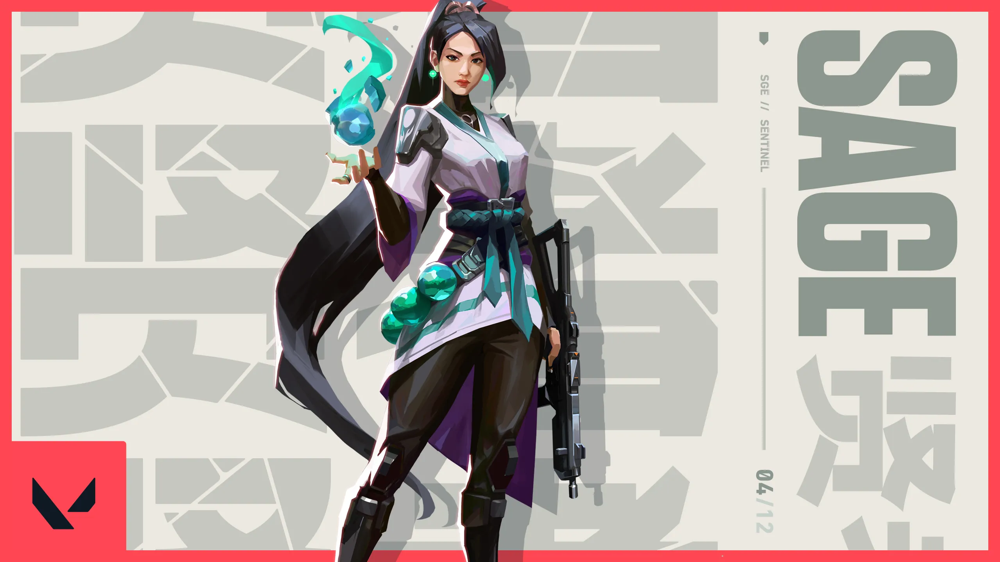

Sage - Sentinel
Sage is a healing and defensive agent. She is the backbone of any team with her ability to heal and revive teammates.

Abilities
- Healing Orb: Heals a teammate or herself over time.
- Barrier Orb: Creates a solid wall that can be rotated before placing.
- Slow Orb: Creates a zone that slows players within it.
- Resurrection: Revives a dead teammate.
Learn about other agents on the Agents Page.